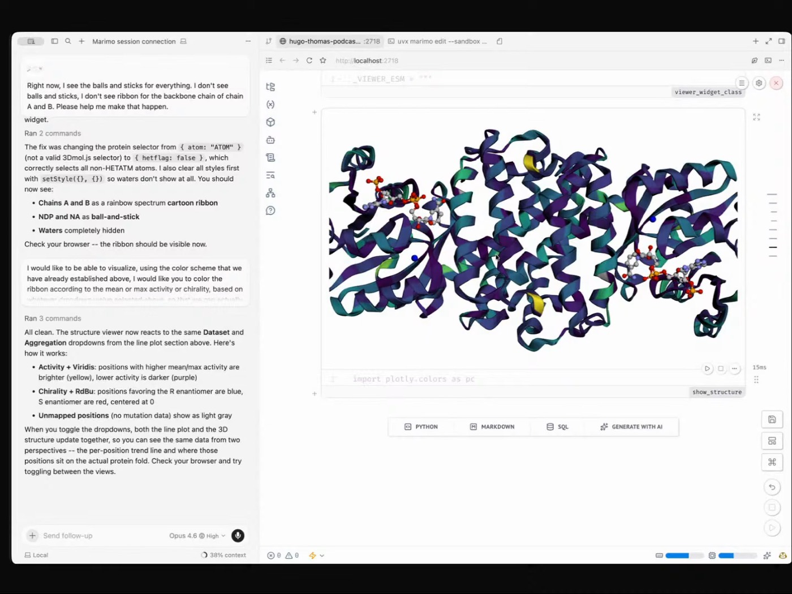
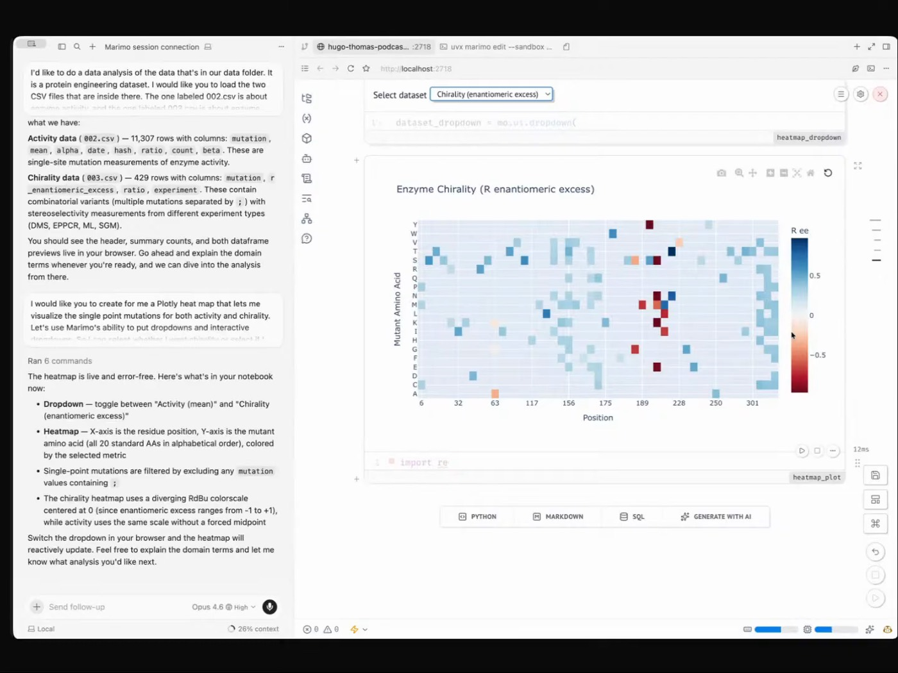
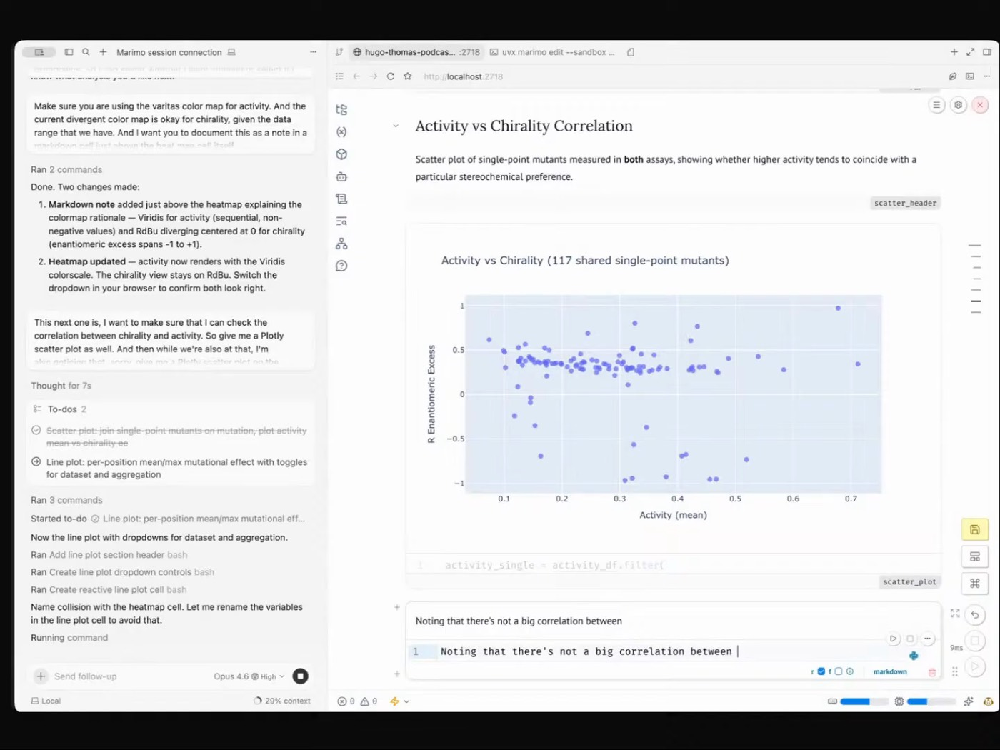

marimo-pair
Markdown instructions plus a bash script that let a coding agent reach into the live Python kernel. The bridge Jupyter never had. Install and point it at your own work.
 ERIC MA
MODERNA
MARIMO PAIR
AGENTIC EDA
SOCRATES NOT SYCOPHANT
ERIC MA
MODERNA
MARIMO PAIR
AGENTIC EDA
SOCRATES NOT SYCOPHANT
Eric does data science as a live conversation: the agent edits a reactive Marimo notebook, reaches into the Python kernel, and renders plots, while he chooses every scientific question and owns the interpretation. Asking an agent to "do it all for me," he says, is irresponsible as a data scientist.

"I don't go into the analysis with a vague question and just ask the agent to do it all for me. That, I think, is irresponsible as a data scientist." So Eric splits the work: the agent handles the routine loops, and the human keeps "load the data context into my head" firmly in the loop. The agent is "a pair programmer, not a thing that just does the whole thing for me."
The enabler is the Marimo Pair skill: markdown instructions plus a bash script that let the coding agent reach directly into the Python kernel. The surface is a reactive Marimo notebook, where cells never go stale the way they do in Jupyter, so the agent can edit live while state stays coherent.
Inside the write-up: the principles below, a session walkthrough, anti-patterns, the finished notebook, and the AGENTS.md rules that keep it presentation-ready.

"It can help me amplify where I don't know what I don't know."


"Load the data context into my head, versus this routine thing that I need a machine to automate."
Markdown instructions plus a bash script that let a coding agent reach into the live Python kernel. The bridge Jupyter never had. Install and point it at your own work.
The full write-up: human directs one question at a time, every claim backed by an artifact, the agent as pair programmer.
Two rules keep the notebook presentation-ready: interleave explanatory markdown with code, and give every cell a unique descriptive name.
The finished notebook from the live run: plots, widgets, the 3D viewer, notes to self, and the agent-written conclusion, all preserved.
"I do commits and pushes by agent commands. I don't do git commit on the terminal anymore."